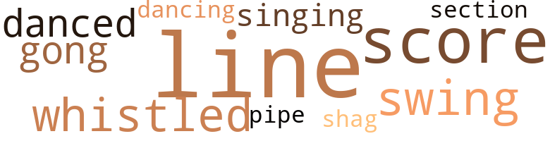
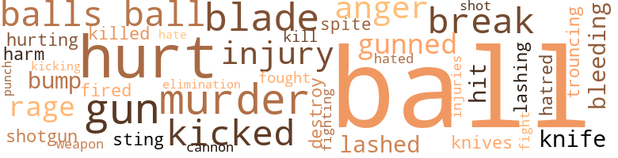

Danger in Center Field, by Mays, Willie and Jeff Harris (1963)
32 music-related terms matched in this text.
Most frequent terms in this topic: line (9); score (6); whistled (3); danced (2); gong (2)
dance.v.03
Definition: skip, leap, or move up and down or sideways
| word | sentence |
|---|---|
| danced | Now , as Big G prepared to pitch , Mike danced off first , taking as large a lead as he could . |
| danced | He danced off first now as Poindexter stepped into the box . |
| dancing | Keller checked Whizzer dancing off third and threw his sidearm curve to the plate . |
gong.n.01
Definition: a percussion instrument consisting of a metal plate that is struck with a softheaded drumstick
| word | sentence |
|---|---|
| gong | A few of the other Kings followed Whizzer 's example and , for the first time in weeks , some Kings were on the field loosening up before the clubhouse gong had sounded . |
| gong | The gong sounded and they charged out as " Take Me Out to the Ballgame " blared forth from the loudspeaker . |
pipe.n.04
Definition: a tubular wind instrument
| word | sentence |
|---|---|
| pipe | Anyhow , my head is so hard , they could n't break it with a lead pipe . " |
score.n.02
Definition: a written form of a musical composition; parts for different instruments appear on separate staves on large pages
| word | sentence |
|---|---|
| score | The Lions , play - ing with a notable lack of enthusiasm , went out in order in the last three innings and the final score was a whopping Kings 15 , Lions 1 . |
| score | In the top of the second inning , with the score 0-0 , Whizzer was picked off first base . |
| score | The final score was 9-2 . |
| score | With the score tied in the bottom of the tenth , an easy fly ball that any sand - lotter could have caught slipped right through Fred Snodgrass ' hands for a two-base error . |
| score | But Alfred Wimple caught hold of the same kind of pitch and drilled it cleanly to left field , scoring Stern and making the score 3-2 Eagles in the bottom of the fifth . |
| score | Through the sixth and seventh innnings , the score remained the same . |
section.n.01
Definition: a self-contained part of a larger composition (written or musical)
| word | sentence |
|---|---|
| section | The article in that morning 's sports section seemed to have said it all : ARE THE KINGS FALLING APART AT THE SEAMS ? |
shag.v.01
Definition: dance the shag
| word | sentence |
|---|---|
| shag | He trotted slowly out to center field to shag fly balls as a couple of the Kings wondered if anything was wrong with their spark plug . |
sing.v.02
Definition: produce tones with the voice
| word | sentence |
|---|---|
| singing | He knew that when a team was singing they were in a winning mood . |
singing.n.01
Definition: the act of singing vocal music
| word | sentence |
|---|---|
| singing | In the clubhouse after the game , the Kings were singing and laughing . |
swing.n.05
Definition: a style of jazz played by big bands popular in the 1930s; flowing rhythms but less complex than later styles of jazz
| word | sentence |
|---|---|
| swing | That was obvious after his first swing . |
| swings | Dike Menscher was throwing and Whizzer took his customary five cuts at the ball , he missed the first one , fouled off the next two and hit infield pop ups on his final two swings . |
| swing | Whizzer took his first swing as the machine pitched a fastball directly over the plate . |
tune.n.01
Definition: a succession of notes forming a distinctive sequence
| word | sentence |
|---|---|
| line | Three quarters of the way down the first-base line , his spikes caught and he stumbled and fell into the dirt . |
| line | The ball rolled down the third-base line - directly on the line itself . |
| line | Whizzer scored as Poindexter laced a line double down the third-base line . |
| lines | His eyes , which were surrounded by lines from years of squinting into the sun as he watched from the dugout , opened wide in the third inning . |
| line | Managers Hopeworthy and Marx exchanged line - up cards at home plate and went over the ground rules with the umpires . |
| line | The ball hurtled downward about ten feet inside the left-field line . |
| line | Moving his back foot forward on the first pitch , he slid his hand up on the bat and laid a trickier of a bunt down the third-base line . |
| line | Kellers curve broke on the outside corner , but " Patsy " Stem 's educated bat was there to meet it and bunt it neatly half - way down the third-base line . |
| line | Coach Livingston now flashed a series of signs to Mike as Mike looked down the third-base line . |
| line | It was a high fastball and Mike bunted it cleanly up the first-base line as Whizzer streaked across home plate . |
whistle.v.01
Definition: make whistling sounds
| word | sentence |
|---|---|
| whistled | Livingston whistled to Tracy , who stepped out of the box and looked down to the coach . |
| whistled | Poindexter whistled to Alfred Wimple who was standing near third and indicated that he was going to throw . |
| whistled | It whistled into Wimple 's glove about a foot above third base . |
345 violence-related terms matched in this text.
Most frequent terms in this topic: ball (243); hurt (16); balls (7); gun (7); murder (7)
anger.n.01
Definition: a strong emotion; a feeling that is oriented toward some real or supposed grievance
| word | sentence |
|---|---|
| anger | Turner 's neck was red with anger as he bore down on Babe . |
| anger | Turners anger affected his control . |
| anger | " What do you mean , worst ? " asked Curly with mock anger . |
| anger | Mac Tracy kicked the turf in anger as he walked back to his position . |
bleeding.n.01
Definition: the flow of blood from a ruptured blood vessel
| word | sentence |
|---|---|
| bleeding | " What happened ? " they all wanted to know , as Flanik examined the bleeding finger . |
| bleeding | The razor had cut deeply and even though Doc Flanik had stopped the bleeding , the pain was intense . |
bump.n.01
Definition: a lump on the body caused by a blow
| word | sentence |
|---|---|
| bump | He rubbed a large bump on top of his head . |
| bump | It might easily hit a bump or a pebble and be deflected just enough to cause an error if you 're not following it . |
cannon.n.04
Definition: heavy automatic gun fired from an airplane
| word | sentence |
|---|---|
| cannon | The ball was going to drop in and the two Eagle runners lit out for home as if shot out of a cannon . |
destroy.v.04
Definition: put (an animal) to death
| word | sentence |
|---|---|
| destroy | Whatever was in this box was designed to destroy him . |
elimination.n.05
Definition: the murder of a competitor
| word | sentence |
|---|---|
| elimination | We can make a list of all the players on the team and find out who 's sending the notes by the process of elimination , " said Whizzer . |
fight.n.05
Definition: a boxing or wrestling match
| word | sentence |
|---|---|
| fight | Now they were a new team , outplaying and outthinking the league leaders , ready to take them on and beat them again tomorrow , ready to make a real fight for the pennant . |
fight.v.02
Definition: fight against or resist strongly
| word | sentence |
|---|---|
| fought | They would have faced their strongest rival and fought them to a standstill , leaving Kings Park just as they had entered - three full games in front . |
| fighting | The stands were tense with excitement as the two teams went into the eighth inning with the Kings still fighting to hold their thin lead . |
flog.v.01
Definition: beat severely with a whip or rod
| word | sentence |
|---|---|
| trouncing | It showed that the first-place Eagles were trouncing the Sox . |
fracture.n.01
Definition: breaking of hard tissue such as bone
| word | sentence |
|---|---|
| break | A bad break . |
| breaks | Even with the bad breaks they had re - ceived in the game , like Mac Tracy 's tripping on his way to first and , in the fourth inning , having Mike Santiago see a routine ground ball hit a small pebble in the infield and bounce over his head , the Kings still managed to win . |
| breaks | Had it been earlier in the season , those bad breaks would have been suf - ficient to cause a general let-down among the play - ers and the game would have ended in another loss . |
| break | Nobody could have hit a more solid shot than Babe , but what a bad break to have it go directly at a fielder . |
| break | And he realized that when Tracy fell on his way to first base in the game with the Lions , it was n't a bad break , but merely part of Tracy 's plan to keep the Kings out of contention . |
fury.n.01
Definition: a feeling of intense anger
| word | sentence |
|---|---|
| rage | Turner was in a rage . |
| rage | His rage was beyond control . |
| rage | Ben Keller was beside himself with rage . |
gun.n.01
Definition: a weapon that discharges a missile at high velocity (especially from a metal tube or barrel)
| word | sentence |
|---|---|
| gun | " How to gun that ball , Smith , " said Dixie Stanton . |
| gun | The Lion catcher set himself to receive the ball and gun it down to third to nab the daring runner . |
| gun | The man held a gun pointed right at Whizzer . |
| gun | Tracy had a gun pointed right at him and he thought it would be best to let him do all the talking at the moment . |
| gun | I think this gun shows you I mean it . " |
| gun | Whizzer looked at the gun in Tracy 's hand and then up to Tracy 's face . |
| gun | He sat in a chair in the middle of the room while Tracy stood a safe distance away , pointing his gun directly at the rookie 's heart . |
gun.v.01
Definition: shoot with a gun
| word | sentence |
|---|---|
| gunned | By the time Whizzer had gunned the ball back to the infield , Lennard stood on third . |
| gunned | He caught the ball at eye level and gunned it toward Wimple . |
| gunned | Whizzer figured Tracy must have seen that there was no play at the plate , so he straightened up and gunned the ball overhand and on one fast skip to Filip Santiago at second as Lennard scored . |
harm.v.01
Definition: cause or do harm to
| word | sentence |
|---|---|
| harm | The best way to take care of it - " The three Kings left the clubhouse together , Wimple never suspecting that both Whizzer and Babe had thought him to be a traitor to the team 's pennant chances , the man who was trying so hard to harm Whizzer . |
hate.n.01
Definition: the emotion of intense dislike; a feeling of dislike so strong that it demands action
| word | sentence |
|---|---|
| hatred | Whizzer had come across this kind of unreasoning hatred a number of times before in his baseball career . |
hate.v.01
Definition: dislike intensely; feel antipathy or aversion towards
| word | sentence |
|---|---|
| hated | Through his half-closed eyes , he fully ex - pected to see the ball rolling to the wall and instead saw the hated Whizzer hurtling through space and spearing the ball at the final instant . |
| hate | " I even hate to mention it , but Babe here insisted we come up . " |
hurt.v.04
Definition: cause damage or affect negatively
| word | sentence |
|---|---|
| hurt | This team has hurt me enough . |
| hurt | The team would be divided into separate factions and the resulting disharmony would accomplish Tracy 's goal to hurt the Kings . |
| hurt | Mac was smart enough not to try to hurt the Kings when they ob - viously were going to win . |
| hurt | And he 's decided that he can hurt the Kings by putting me out for the season . " |
injury.n.01
Definition: any physical damage to the body caused by violence or accident or fracture etc.
| word | sentence |
|---|---|
| injury | The injury , although painful , would n't stop him from playing . |
| injury | If Whiz - zer swung at an inside pitch and hit the ball off the thin handle of his bat , his injury might open and he might have to miss the next game with the Lions - maybe even the next two . |
| hurt | Then , when he gets hurt , they give it to you . |
| injury | They knew that nothing in the world except serious injury could make Whizzer miss a ball game . |
| hurt | " Does this hurt ? " |
| injury | Whizzer nodded in agreement and was thankful Tracy 's brutal beating had n't inflicted more injury than it had . |
| injuries | Per - haps he was thinking that the only way he could revenge himself for all the tensions and injuries he had experienced was to catch the fast-dropping baseball . |
kick_back.v.02
Definition: spring back, as from a forceful thrust
| word | sentence |
|---|---|
| kicked | When he reached the dugout , he flung his glove against the wall , kicked the water cooler and cursed a blue streak . |
| kicked | His leg kicked high and he threw to the plate . |
| kicked | The Eagle pitcher kicked high and rocketed a fast - ball to the outside part of the plate . |
| kicked | Mac Tracy kicked the turf in anger as he walked back to his position . |
| kicking | But it did n't look to the fans in the grandstand as if he was kicking the turf because he was angry at himself . |
| kicked | Then he sat down in an easy chair , kicked off his shoes and mumbled something that indicated Whiz - zer should get on talking about his plan . |
kill.v.10
Definition: cause the death of, without intention
| word | sentence |
|---|---|
| killed | As it was , his failure to swing had killed the Kings ' rally , made Manager Hopeworthy look bad and plunged Whizzer into even deeper misery . |
| kill | If we lose another full game , that would just about kill us off . |
knife.n.02
Definition: a weapon with a handle and blade with a sharp point
| word | sentence |
|---|---|
| knives | Kitchen knives , hatchets - ouchl " Doc Flanik was applying some ointment to the deep slice on Whizzer 's finger . |
| knife | Your side is going to cut you like a knife when you swing . |
| knife | And providing them while his ribs were encased in a tight brace , cutting him like a knife whenever he moved too sharply ! |
malice.n.01
Definition: feeling a need to see others suffer
| word | sentence |
|---|---|
| spite | In spite of his pain and his weakening body , there was a surge in his spirits . |
murder.n.01
Definition: unlawful premeditated killing of a human being by a human being
| word | sentence |
|---|---|
| murder | Tracy had an expression on his face that seemed to say , " Throw it in here , Turner , and watch me murder the ball . " |
| murder | Tracy would murder that kind of pitch . |
| murder | If there 's one thing Hopeworthy will murder you for , it 's breaking the curfew . " |
| murder | Everyone knew just how efficiently Tracy could murder a high pitch . |
| murder | " Babe " was probably the slowest man in organized ball , but how he could murder the ball ! |
| murder | Everybody knew how Mac Tracy could still murder a high pitch . |
| murder | It looks great from the stands when your throw comes in on the fly , but it 's murder for the infielders . |
musket_ball.n.01
Definition: a solid projectile that is shot by a musket
| word | sentence |
|---|---|
| ball | Let 's play ball . " |
| ball | The ball rolled between Poin - dexter and Whizzer all the way to the wall . |
| ball | Mc - Carthy was already speeding around second when Whizzer picked the ball up . |
| ball | But the ball arrived a split second before his flashing spikes and Wimple tagged him out as the crowd roared its approval . |
| ball | He yelled at the speedy second baseman , " Hit the ball fair , ya little squirt . " |
| ball | Filip swung and hit the ball off the handle of his bat . |
| ball | By the time the ball was relayed back to the infield , Filip Santiago was on third and Wimple on second . |
| ball | The ball brushed the front of his uniform and the umpire waved him to first base . |
| ball | Tracy had an expression on his face that seemed to say , " Throw it in here , Turner , and watch me murder the ball . " |
| ball | The ball was too slow to be a double play . |
| ball | Novak at second lobbed the ball over to first baseman McCarthy and Tracy was out before he had regained his feet . |
| ball | Mc - Grath , the Lion speedster in center , caught the ball with his back up against the wall where the sign read 420 feet . |
| ball | He lashed it down the left-field line and , before Mac Tracy could move the ball back to the infield , the Eagles had the tying run on third and the winning run on second . |
| ball | If Whiz - zer swung at an inside pitch and hit the ball off the thin handle of his bat , his injury might open and he might have to miss the next game with the Lions - maybe even the next two . |
| ball | The ball rolled down the third-base line - directly on the line itself . |
| ball | For a moment it appeared the ball would roll foul and the crowd seemed to hold its breath as the Lion third baseman decided to let the ball roll . |
| ball | For a moment it appeared the ball would roll foul and the crowd seemed to hold its breath as the Lion third baseman decided to let the ball roll . |
| ball | The ball hugged the line and refused to go into foul territory . |
| ball | Whizzer had decided to himself that the ball would be fair . |
| ball | The third baseman was standing over the ball , hoping it would roll foul , completely unaware of Whizzer 's daring move . |
| ball | Startled , he reached down for the ball , but he dropped it . |
| ball | The Lion catcher set himself to receive the ball and gun it down to third to nab the daring runner . |
| ball | Seemingly without effort , Poin - dexter placed his bat in front of the ball and bunted it softly between the pitchers mound and third base . |
| ball | But pitching against the long ball hitter of the Eagles , Marv Hatfield , Curly Curran made his fastball just a little too fast . |
| ball | Turner ran toward Whizzer with the ball in his hand . |
| ball | The impact jarred the ball loose from Turner 's grasp and it rolled free in foul territory towards the Lion dugout . |
| ball | Whizzer trotted home amid a wild uproar from the many thousands of King supporters , while the Lion third baseman chased futilely after the ball . |
| ball | Hat - field swung and got good wood on the ball . |
| balls | He walked Dixie Stanton on four pitches and then , after falling behind two balls and no strikes to Curly Curran , he grooved a pitch down the middle . |
| ball | Gary Michaels , the Lions ' veteran reliever , did n't have a thing on the ball . |
| ball | But now the Kings seemed to take the breaks as they came - and they had started to make their own breaks by playing heads-up ball . |
| ball | Two steps away from the wall , the speed - ing rookie reached into the sky and caught the ball high in the webbing of his glove . |
| ball | The ball , which Janifer had caught for a second in his web - bing , rolled free as he lay unconscious . |
| ball | Two Eagle runners crossed the plate , Hatfield stopping at third as Poindexter retrieved the ball and threw it in . |
| ball | " When the ball is hit over your head , Billy , do n't backpedal . |
| ball | Turn your back on the ball and run to the spot where you think the ball is going to fall . |
| ball | Turn your back on the ball and run to the spot where you think the ball is going to fall . |
| ball | That way you 'll catch up with the ball faster . |
| ball | The ball came in high and with a bad spin . |
| ball | He brought the bat around smoothly and freely , hitting tire ball squarely . |
| ball | His swing seemed effortless , but his per - fect timing and strong wrists and forearms snapped the bat around at the right instant and the ball rocketed on a line over second base . |
| ball | He reminded Everhart to keep the ball away from the Lions ' power hitters . |
| ball | The first three hitters , M. Santiago , F. Santiago and Wimple , did n't try to belt the ball . |
| ball | Then Babe swung easily at the first pitch and stroked the ball directly and softly over first baseman McCarthy 's head for another single and that was all for Carmen . |
| ball | Poindexter , who had caught a fly ball in right for the final out , refused to give Everhart the winning ball . |
| ball | " Any pitcher who wins when his team gets him 15 runs does n't de - serve the ball . |
| ball | Whizzer wondered what it would be like not to be able to play ball . |
| ball | Dike Menscher was throwing and Whizzer took his customary five cuts at the ball , he missed the first one , fouled off the next two and hit infield pop ups on his final two swings . |
| ball | It did n't break and the Bear hitter lined the ball deep into the stands to give the Bears a 2 to 0 advantage . |
| ball | Danny Hope - worthy came out to the mound and took the ball from Stern . |
| ball | Wimple , for the second time , swung at an out - side pitch and rifled the ball into right field . |
| ball | He did n't have to move as the ball shot into his big glove . |
| ball | The ball hit Tracy on the leg , and Tracy limped down to first base . |
| ball | The ball went two rows deep into the front boxes outside of third base and he had another life . |
| ball | The ball broke over the center of the plate for the third strike . |
| ball | He had relieved " Patsy " Stem in the second inning , with nobody out , and had pitched eight full innings of beautiful ball - the longest relief chore he had done in two seasons . |
| ball | " Mr. Hopeworthy , from the earliest time I can remember , I 've wanted to play ball in the majors . |
| ball | Now let 's start playing team ball and forget about how great you think you are . " |
| ball | You just concentrate on playing ball and do n't think you 're so great . |
| ball | I 'm here to play ball . |
| ball | He was going to concentrate on playing ball and let that be his big worry . |
| ball | The Kings were hitting the ball on the nose , but the ball , at least in the first few innings , persisted in going directly at Bear gloves . |
| ball | The Kings were hitting the ball on the nose , but the ball , at least in the first few innings , persisted in going directly at Bear gloves . |
| ball | Kop - pelmann , the weak-hitting Bear pitcher was n't ex - pected to get good wood on the ball , as his lifetime average of .038 indicated . |
| balls | As a matter of fact , only two balls had ever been hit into the stands at that point in the entire 32-year history of the stadium . |
| ball | Koppelmann , after a second of standing at home plate staring in wonder at the ball he had hit , began to run . |
| ball | Deep he went into center , still not having looked for the ball since the moment Koppelmann hit it . |
| ball | At the exact moment when Whizzer finally looked skyward without breaking stride , the gleam - ing white ball was just passing over him and coming down like a shot . |
| ball | He reached far forward and the ball dropped into his glove as if drawn by a magnet . |
| ball | And when he ran in with the ball towards the dugout , passing the disgusted Koppelmann who stood un - believing on second base , there was the old familiar Whizzer Smith grin on his face . |
| ball | He was playing ball again ! |
| ball | He drove the ball deep into the left - field stands . |
| ball | He had lined a ball to the left of the second baseman , who had barely succeeded in de - flecting it off his mitt and into the outfield . |
| ball | Whizzer would not play ball again for a long , long time . |
| ball | He knew he would play ball again for the Kings . |
| ball | The ball shot on a line into the upper deck in left field . |
| ball | Each time he connected solidly and on the last swing the ball once again landed in the upper deck in left . |
| ball | He just loved to play ball . |
| ball | The rightfielder came up with the ball near the wall and threw as hard as he could toward second . |
| ball | He played every ball hit to center as if the pennant were at stake . |
| ball | My pitching rotation is shot , I have old Milt Kramer trying his head off in left field , but just not able to handle the situation , and I have old Mac Tracy back out in center playing ball as if he were just learning . |
| ball | Flanik could n't help but smile at the two ball - players ' enthusiasm . |
| ball | He con - nected solidly and lined the ball into left field . |
| ball | He swung a little harder at Dike 's next ball , but his timing was a little off and he popped it up . |
| ball | He increased his effort on the next delivery and made a full turn into the ball . |
| ball | Now , Mac , you 've been playing major league ball long enough not to for - get a fundamental like that . " |
| ball | For instance , if the pitch were a changeup , the batter would be more likely to pull the ball to left field than if it were a fastball . |
| ball | He swung and lined the ball over Mike Santiago 's head at short , but Whizzer , anticipating where the ball might be hit , had glided over to left center and corralled the well-hit liner . |
| ball | He swung and lined the ball over Mike Santiago 's head at short , but Whizzer , anticipating where the ball might be hit , had glided over to left center and corralled the well-hit liner . |
| balls | Two of them were balls and three of them were strikes and Mike was out . |
| ball | He swung on Big G 's first delivery , but did n't get around on the ball . |
| ball | Tracy squared around to bunt and pushed the ball to the perfect spot - only he bunted it in the air . |
| ball | Third baseman Lennard , charging in , merely had to pick the ball out of the air and fire it across the diamond to first baseman Ruden to double off Babe . |
| ball | With two out and nobody on , Whizzer figured the Eagles would be looking for him to try for the long ball . |
| ball | By the time the second baseman had charged in and scooped the ball up barehanded , Whizzer had already crossed first base with the second King hit of the inning . |
| ball | He hurried his motion and threw the ball to the plate as fast as he could . |
| ball | As Bogin started to bring the ball down to tag the runner , Whizzer had al - ready gone into a headfirst dive , his fingers brushing home plate and beating the tag by a fraction of a second . |
| ball | With two out and virtually no chance of catching the ball , the right move was to play it for a single . |
| ball | However , as Whiz - zer moved to back up Tracy , he saw the leftfielder charge forward , as if he had a good chance of catch - ing the ball . |
| ball | Tracy dove and , naturally , the ball skipped by him . |
| ball | By the time Whizzer had gunned the ball back to the infield , Lennard stood on third . |
| ball | To the fans in the ballpark , it appeared that Tracy had had a good chance of catching the ball and now they applauded the aging veteran for his " fine effort . " |
| ball | But to Whiz - zer , who could see the ball from an outfielder 's point of view , it was obvious that Tracy never had a chance to catch the ball and had simply given Lennard two extra bases , putting him in scoring position . |
| ball | But to Whiz - zer , who could see the ball from an outfielder 's point of view , it was obvious that Tracy never had a chance to catch the ball and had simply given Lennard two extra bases , putting him in scoring position . |
| ball | He took a screwball inside for ball one and a slow curve outside and high for ball two . |
| ball | He took a screwball inside for ball one and a slow curve outside and high for ball two . |
| ball | The fans groaned as they heard a sharp crack and saw the ball shoot high and on a line toward the left center-field wall . |
| ball | He positioned himself in the spot where he thought the ball would rebound . |
| ball | The ball shot off the wall and came directly to Whizzer on one hop . |
| ball | The ball hummed toward second base . |
| ball | The ball seemed to have eyes as it rolled tantalizingly be - tween Wimple and Mike Santiago . |
| ball | The one-time Most Valuable Player swung and missed the ball by a good six inches . |
| ball | Could it be that the wise old base - ball manager was beginning to put two and two together ? |
| ball | He would n't chop at the ball the way so many inexpert hunters do . |
| ball | He would guide the bat into the ball levelly and smoothly , holding the bat loosely with his right hand up around the label ( to cushion the shock of ball meeting bat ) and tightly with his left hand down at the end of the handle . |
| ball | He would guide the bat into the ball levelly and smoothly , holding the bat loosely with his right hand up around the label ( to cushion the shock of ball meeting bat ) and tightly with his left hand down at the end of the handle . |
| ball | But now , as he lit out for first , he saw he had hit under the ball . |
| ball | Jim Poindexter had preceded them by attempting to slap the ball into right field , but had succeeded only in hitting the ball directly to first baseman Ruden , who made the put - out unassisted . |
| ball | Jim Poindexter had preceded them by attempting to slap the ball into right field , but had succeeded only in hitting the ball directly to first baseman Ruden , who made the put - out unassisted . |
| ball | Then Curly tried to aim the ball to the next batter , Ruden , but made his curve a little too good . |
| ball | Ruden , a lefthander , lashed out and drove the ball on a line over Babe Polanski 's head . |
| ball | He jumped as high as his heavy legs would allow and managed to get his glove on the ball . |
| ball | Even though it would have been a miracle if big Babe had been able to snare the ball in his outsize mitt , the King rooters had cause for optimism . |
| ball | If the ball had gone over Babe 's head untouched , it surely would have been a two-bagger and the Eagles would have had the tying run on third and the lead run on second . |
| ball | Babe 's deflection of the ball caused it to fall dead on the edge of the outfield grass and the runners were held to first and second . |
| ball | Then , with his back to second base , he flipped the ball blindly to his brother , who he felt would be there . |
| ball | The King manager added that Curly had best try to keep the ball away from Hatfield 's power - anything inside . |
| ball | He prayed silently that Hat - field would n't hit the ball to Tracy , because he knew Tracy would manage to make some play that would cost the Kings the ballgame . |
| ball | The pitch was a sharp-break - ing curve , designed to make Hatfield swing and hit the ball on the ground for what could be a double play . |
| ball | He grabbed the perfect toss with his bare hand while standing on the base and then , leaping high in the air to avoid the flashing spikes of the sliding runner , whipped the ball on to the waiting Polanski in one motion . |
| ball | But he , like Whizzer earlier in the game , hit too far under the ball and the result was a high fly along the left-field foul line . |
| ball | Tracy was going to miss the ball on purpose ! |
| ball | The Kings ' leftfielder took one or two hesitating steps back , as if he were getting under the ball , and then swayed to and fro . |
| ball | The ball was going to drop in and the two Eagle runners lit out for home as if shot out of a cannon . |
| ball | Something told him that he just had to catch that ball , although to all intents and purposes it was clearly and un - mistakably impossible . |
| ball | The ball was dropping now and Mac Tracy lay face down on the turf , smiling into the grass . |
| ball | Perhaps he was thinking how he must catch the ball so that an entire team 's season would n't be ruined by the actions of a sick and dangerous man . |
| ball | The ball hurtled downward about ten feet inside the left-field line . |
| ball | At the moment Whizzer s diving body touched the ground , the ball fell - into Whizzers glove ! |
| ball | Whizzer struggled to his feet and weakly threw the ball in the direction of the shortstop , before sinking down to one knee . |
| ball | He had caught a ball along the left-field line after starting in his own center field ! |
| ball | Through his half-closed eyes , he fully ex - pected to see the ball rolling to the wall and instead saw the hated Whizzer hurtling through space and spearing the ball at the final instant . |
| ball | Through his half-closed eyes , he fully ex - pected to see the ball rolling to the wall and instead saw the hated Whizzer hurtling through space and spearing the ball at the final instant . |
| ball | Dimly , he saw the ball returned to the infield and the two outs duly signalled by the umpire . |
| ball | Whizzer knew he could play ball free and easy , the only way he knew how . |
| ball | The centerfielder should catch any ball he can . |
| ball | Of course , there will be sit - uations where , with a runner at second base and a deep fly ball hit to right center field , the right - fielder should probably catch the ball because he has a better chance , due to the position of his body , to throw the runner out if he attempts to take third after the catch . |
| ball | But even in such a situation , the centerfielder should call for the rightfielder to catch the ball and then should back him up just in case he should misjudge the ball . |
| ball | But even in such a situation , the centerfielder should call for the rightfielder to catch the ball and then should back him up just in case he should misjudge the ball . |
| ball | All too many potentially good outfielders " laze " around in the outfield wait - ing for the ball to come their way and just idly watching the game , waiting for their time at bat . |
| ball | He made him swing at a bad pitch and the big slugger hit the ball off the handle , sending a short pop fly about forty feet behind second base . |
| balls | As the pitch is thrown , the centerfielder should rise on the balls of his feet , ready to move quickly to his left or right , to the infield or farther back . |
| ball | An intelligent outfielder keeps his body ready to " get a good jump " on the ball . |
| ball | He stands crouched and low , his eyes intent on watching the ball every sec - ond . |
| ball | Of course , to know where the ball is going to land after it is hit is something that takes many long hours of hard practice . |
| ball | Look at him hit the ball and then look away . |
| ball | Run to the spot where you think the ball is going to land . |
| ball | If you can now reach the ball without having to take a step , you have judged the ball well . |
| ball | If you can now reach the ball without having to take a step , you have judged the ball well . |
| ball | The first one should be used when there are no runners on base and stopping the ball and returning it to the infield are the important objectives . |
| ball | Get down on one knee in front of the ball . |
| ball | The idea is to make sure the ball does not get on by you , giving the batter the chance to take an extra base or even two . |
| ball | Positioning your body in front of the ball is the surest method of making sure the ball does not go through . |
| ball | Positioning your body in front of the ball is the surest method of making sure the ball does not go through . |
| ball | Of course , you can only use this method when you are positive the runner is not looking for the extra base - - for instance if the batter is not an exceptionally fast man and the base hit was a well-hit ball . |
| ball | An outfielder then can be reasonably certain that if he gets down on one knee , picks the ball up cleanly and does n't hold the ball , but throws it directly back to either the second baseman or shortstop , the runner will not advance . |
| ball | An outfielder then can be reasonably certain that if he gets down on one knee , picks the ball up cleanly and does n't hold the ball , but throws it directly back to either the second baseman or shortstop , the runner will not advance . |
| ball | However , with men on base , or with a slow-hit ball where the outfielder has to do a lot of running to get to the ball , or even with a well-hit ball that is not hit directly to one of the outfielders , there is no time for a safe , down-on-one-knee maneuver . |
| ball | However , with men on base , or with a slow-hit ball where the outfielder has to do a lot of running to get to the ball , or even with a well-hit ball that is not hit directly to one of the outfielders , there is no time for a safe , down-on-one-knee maneuver . |
| ball | However , with men on base , or with a slow-hit ball where the outfielder has to do a lot of running to get to the ball , or even with a well-hit ball that is not hit directly to one of the outfielders , there is no time for a safe , down-on-one-knee maneuver . |
| ball | In these situations , the centerfielder must be able to pick up the ball while running at top speed and throw to the correct base . |
| ball | The first is to have figured out in advance what he will do with the ball if it is hit to him . |
| ball | He must know ex - actly what he will do with the ball if it is hit to him . |
| ball | Nine out of ten errors you see on the playing field ( excluding , of course , throwing errors ) come from the fact that the player has not kept his eye on the ball when he should have . |
| ball | This is especially important for the centerfielder trying to pick up the ball on the run . |
| ball | If you can just remember to watch that ball - watch it as carefully as you can watch anything - you will find that you will be making a lot fewer errors . |
| ball | You see , when you take your eye off the ball , it is just a matter of luck as to whether or not the ball ends up in your glove . |
| ball | You see , when you take your eye off the ball , it is just a matter of luck as to whether or not the ball ends up in your glove . |
| ball | But if you are carefully watching the ball at all times , there is no luck involved . |
| ball | Remember the numbers of these players and whether they appeared to be strictly pull hitters or whether they were able to punch the ball into the opposite field . |
| ball | An outfielder who is " on the ball " knows a little bit more about the op - position than the opposition knows about him . |
| ball | A lot of people say my style of " basket-catch " is no good since it does n't give the player the opportunity to lunge for the ball again if he has juggled it . |
| ball | It seemed ridiculous to believe that he could get to the ball and the Eagle runner on third smiled to himself and started to jog home . |
| ball | I have seen centerfielders with no great amount of speed beat out faster out - fielders for the job simply because they had prac - ticed getting the jump on the ball and getting off to a quick start , nullifying the other man 's speed . |
| ball | Be prepared to get a good jump on the ball . |
| ball | But Whizzer did n't give up on the ball . |
| ball | Know what to do with the ball before you get it . |
| ball | Catch the ball with two hands . |
| ball | At the end of the roll - through , Whizzer was somehow back on his feet and the ball was miraculously heading for third base . |
| ball | ( The rookie hurler would pitch and , if the ball went through the strike zone , a circuit would be disturbed and the electronic machine would sound a loud " gong . " ) |
| ball | The ball missed him by no more than a hair-breadth . |
| balls | " Who ever heard of a mechanical pitching machine throwing bean - balls ? " |
| ball | As far as appearances to any of his teammates and to the few fans who had arrived at the ball park early , it would have been difficult to imagine anything at all was bothering the rookie . |
| ball | Francis " Babe " Polanski , the lumbering first baseman who could almost knock the stuffing out of the ball . |
| ball | The intellectual power-hitter set himself to field the ball , but it hit the smallest of pebbles in the infield and took the highest of bounces . |
| ball | The ball bounded over Wimple 's head into the left-field corner and the Eagles had runners on second and third with nobody out . |
| ball | His graceful swing caught the ball solidly and he lined it over the shortstop 's head , in the alley between left and center field . |
| ball | " Babe " was probably the slowest man in organized ball , but how he could murder the ball ! |
| balls | Filip Santiago tried his best for a base hit , but was fooled by one of Keller 's sidearm sinker balls and grounded out to short , Stern holding at second . |
| ball | He stood far back in the batter 's box , a right - handed batter who looked absolutely at ease and ready to swing for the long ball . |
| ball | He had figured that Whizzer would be swinging from his heels , trying to hit the ball out of the park and tie the game up . |
| ball | By the time he was able to charge in and pick up the ball , Whizzer had crossed first base and the Kings had the tying run on with nobody out . |
| ball | Toby Lennard , the Eagles ' third baseman , charged in to try and pick up the ball for a play at first base . |
| ball | Lennard reached the ball first . |
| ball | It was a low throw and the first base - man had to stretch almost into a complete split to catch the ball before it hit the dirt . |
| ball | There was n't a fan in the ball - park who did n't now feel that the Kings would win . |
| ball | The first was a high fastball that umpire Gilbert called a ball on Alfred Wimple . |
| ball | " All of my dinky curves and half-baked sliders would n't have meant anything if you had n't been on the ball , Rook , " said Stern . |
| ball | " Here 's the winning ball . |
| ball | He gave the ball to Whizzer and shook his hand , " You keep on playing ball like you did yesterday and today and I 'm going to be giving you a lot more winning baseballs . " |
| ball | He gave the ball to Whizzer and shook his hand , " You keep on playing ball like you did yesterday and today and I 'm going to be giving you a lot more winning baseballs . " |
| balls | And I hope I get at least ten more balls from you before the sea - son is over . " |
| ball | He would have been the next batter and he would have hit the ball so far - Whizzer cut him off short . |
| ball | And every so often , he could hit that good long ball . |
| ball | Whizzer was taking pre - game fielding practice out in center field , playing each ball hit to him as if it had been hit during a real game . |
| ball | Many times on long throws the ball will actually break , like a curve . |
| ball | On the other hand , Whizzer , if you al - ways keep your throw low , making sure it comes to the infielder on one skip , the infielder knows ex - actly where to expect the ball and can be ready to put the tag on the runner . |
| ball | Also , if the throw is low , other infielders can cut the ball off to prevent runners from taking extra bases . |
| ball | You pick a spot , as you start to throw , where you want the ball to hit the ground so that by the time it skips the second time , it 's right at the bag . " |
| ball | Whizzer watched as he threw the ball in the air , caught it and took only two short steps be - fore throwing the ball directly overhand toward third . |
| ball | Whizzer watched as he threw the ball in the air , caught it and took only two short steps be - fore throwing the ball directly overhand toward third . |
| ball | The ball skipped on the turf just behind short and stayed low . |
| ball | He gave Whizzer a ball and Whizzer tossed it in the air . |
| ball | He caught the ball at eye level and gunned it toward Wimple . |
| ball | The ball hit at about the same spot as had Poin - dexter 's , but instead of going directly to third , it veered off after the bounce and Wimple had to take a couple of steps away from third to grab it . |
| ball | When I throw that way , it means the ball is spinning straight . |
| ball | That meant that when the ball hit the ground it was spinning at an angle , so it veered off its target . |
| ball | But , Whizzer , if you throw the ball overhand , when it hits the ground it will bounce straight . |
| ball | He threw it with a true overhand motion and the ball skipped to Wimple on a straight course . |
| ball | He soon realized that , by throwing the ball on one hop , his accuracy increased and all of his throws were lower and easier for the infielders to handle . |
| ball | If only that great young kid continues to play the kind of ball he has been playing . . . Pat Chambers , a rookie who had been the sensa - tion of the Kings ' spring-training camp , was on the mound throwing his great curve ball at the Eagles . |
| ball | Pastor threw a fastball outside for a ball , and his next pitch was to the same spot , but a changeup . |
| ball | Dixie , a right - handed batter , was caught off balance and swung too early , hitting the ball off the end of his bat and dribbling it weakly to first base for an out . |
| ball | The Eagle pitcher kicked high and rocketed a fast - ball to the outside part of the plate . |
| ball | Waiting until the last split - second , Whizzer brought his bat around easily and met the ball . |
| ball | Instead , he hit the ball where it was pitched - outside - and drove it sharply on a line over the first baseman 's head for the first King hit of the day . |
| ball | The ball hit a few feet fair inside the right-field foul line . |
| ball | By the time he had recovered the ball and thrown it back to the infield , Whizzer was standing on third base and the Kings had a runner in scoring position . |
| ball | Pastor cut back off the mound to grab the ball and Warren , the Eagle shortstop , raced in from short . |
| ball | The ball remained untouched as Whizzer crossed the plate . |
| ball | Chambers stood on first base proudly , as if he 'd just blasted the ball off the distant center - field wall . |
| ball | Lennard started digging for the plate as Mac Tracy and Whizzer converged on the ball . |
| ball | As Whizzer ran over to cut the ball off , he was thinking of two things . |
| ball | The second was Joe Poindexter 's advice about throwing the ball overhand and on a bounce . |
| ball | He got to the ball a few feet before Mac Tracy . |
| ball | Tracy yelled as Whizzer scooped the ball up . |
| ball | Whizzer figured Tracy must have seen that there was no play at the plate , so he straightened up and gunned the ball overhand and on one fast skip to Filip Santiago at second as Lennard scored . |
| ball | Confident that Filip would be trying to punch the ball as usual , Joos fed him a high fastball and what happened next caused everyone in the ball park to doubt his eyes . |
| ball | Confident that Filip would be trying to punch the ball as usual , Joos fed him a high fastball and what happened next caused everyone in the ball park to doubt his eyes . |
| ball | But when it comes to playing ball , especially now , when we have a chance to win the flag , I would n't play a joke on the kid who 's given us that chance . " |
open_fire.v.01
Definition: start firing a weapon
| word | sentence |
|---|---|
| fired | He stared at Stanton to see if he could discover what he was thinking and , while his concentration wandered , the Bears ' pitcher , Wilcox , fired to his first baseman , who put the tag on Whizzer before he knew what was happening . |
pain.v.02
Definition: cause emotional anguish or make miserable
| word | sentence |
|---|---|
| hurting | His thumb was hurting him badly . |
| hurt | It hurt him , but he could do it . |
| hurt | " This must have really hurt you when you swung , " said the greying team trainer . |
| hurt | As he inserted piece after piece into his mouth , he managed to say , " But before we find out who 's behind all this , you might get really hurt . |
| hurt | After the embarrassing incident with Alfred Wimple , there were no notes and no attempt to hurt Whizzer for two days . |
| hurt | Had they known at that very moment the King player responsible for all the attempts to hurt Whizzer was already back in his hotel room , thinking of a new scheme to destroy Whizzer 's baseball career , they would not have been so care - free . |
| hurt | They knew they were in trouble without their dashing spark plug - but more important , they all feared he had been hurt . |
| hurt | His head did n't hurt at all unless he moved it too quickly . |
| hurt | He believes the King or - ganization is deliberately out to hurt him . |
| hurt | The ribs have started to knit and he is capable of playing , although it will hurt him like blazes when he has to turn or make any strain on his side at all . |
| hurt | He might get all upset or take it the wrong way and then it would affect how he plays - and that might hurt our pennant chances . |
punch.n.01
Definition: (boxing) a blow with the fist
| word | sentence |
|---|---|
| punch | Again Babe nodded and gave Whizzer a playful punch on the arm . |
shoot.v.02
Definition: kill by firing a missile
| word | sentence |
|---|---|
| shot | What I figure is , if this story got around , everybody would start suspecting every - body else and the morale of the team would be shot to pieces . |
shotgun.n.01
Definition: firearm that is a double-barreled smoothbore shoulder weapon for firing shot at short ranges
| word | sentence |
|---|---|
| shotgun | " That 's no arm - it 's a shotgun ! " |
sting.n.03
Definition: a painful wound caused by the thrust of an insect's stinger into skin
| word | sentence |
|---|---|
| sting | He finished applying the sting - ing medicine and began re-bandaging Whizzer 's thumb . |
strike.v.04
Definition: make a strategic, offensive, assault against an enemy, opponent, or a target
| word | sentence |
|---|---|
| hit | Whoever had done it was well aware that no ballplayer wears a helmet in the batting cage just to hit against a pitching machine . |
| hit | The pitching in the majors , he was finding out , was not as easy to hit as the pitching had been in the minors , but he was learning what pitches to expect and from whom . |
sword.n.01
Definition: a cutting or thrusting weapon that has a long metal blade and a hilt with a hand guard
| word | sentence |
|---|---|
| blade | A razor blade had been positioned in the thumb of Whizzer 's glove and , in putting the glove on , he had run his thumb across the blade . |
| blade | I found an old razor blade on the clubhouse floor and I put it in my back pocket , thinking I 'd throw it away as soon as our meeting was over . |
| blades | But just so that you should n't think I 'm trying to give you a swelled head , I want you to know that anybody who goes around carrying old razor blades in his pocket ca n't be too bright ! " |
| blade | I did n't tell anybody , but Mister ' X ' very kindly put a razor blade in the thumb of my glove so that I 'd slice my finger up , which is exactly what I did . |
| blade | Whizzer stood in center , very carefully putting on his glove , wondering if the traitor would try the same trick twice - putting a razor blade in his deep - pocketed mitt . |
| blade | " I fixed the pitching machine , I put a razor blade in your glove , I even waited for you in the alley and tried to heat some sense into your head , but you did n't pay me any attention . |
weapon.n.01
Definition: any instrument or instrumentality used in fighting or hunting
| word | sentence |
|---|---|
| weapon | His coach in high school had spent many patient hours with his eager pupil , knowing full well that the ability to bunt was a deadly weapon in the hands of a speedster like Whizzer . |
whip.v.04
Definition: strike as if by whipping
| word | sentence |
|---|---|
| lashed | He lashed it down the left-field line and , before Mac Tracy could move the ball back to the infield , the Eagles had the tying run on third and the winning run on second . |
| lashing | Lions ' manager Kiernan kept the clubhouse door closed to reporters and visitors for forty-five min - utes after the game while he administered to his team a verbal lashing the likes of which they had never heard before . |
| lashed | Ruden , a lefthander , lashed out and drove the ball on a line over Babe Polanski 's head . |
12 religion-related terms matched in this text.
Most frequent terms in this topic: Pastor (12)
curate.n.01
Definition: a person authorized to conduct religious worship
| word | sentence |
|---|---|
| Pastor | Meanwhile the Kings had gone out in order in the first and second against the pitching of Mel Pastor , another Eagle fastballer . |
| Pastor | In the bottom of the third Whizzer knelt in the batter 's circle , watching the duel between Pastor and Dixie Stanton , the King catcher . |
| Pastor | Pastor threw a fastball outside for a ball , and his next pitch was to the same spot , but a changeup . |
| Pastor | Whizzer dug in , a relaxed smile on his face , and waited coolly for Pastor 's first pitch . |
| Pastor | His mind flashed back to how Pastor had pitched to Dixie Stanton just a moment earlier . |
| Pastor | Whizzer figured Pastor might try the same thing on him . |
| Pastor | Pastor got his sign and went into his motion . |
| Pastor | Whiz - zer had figured Pastor 's pattern correctly . |
| Pastor | Chambers swung feebly at Pastor 's second delivery and sent a weak roller just past the mound . |
| Pastor | Pastor cut back off the mound to grab the ball and Warren , the Eagle shortstop , raced in from short . |
| Pastor | Pastor and Warren collided about ten feet behind the mound and they both went down . |
| Pastor | Pastor bore down and got Mike Santiago to ground out to end the third inning . |